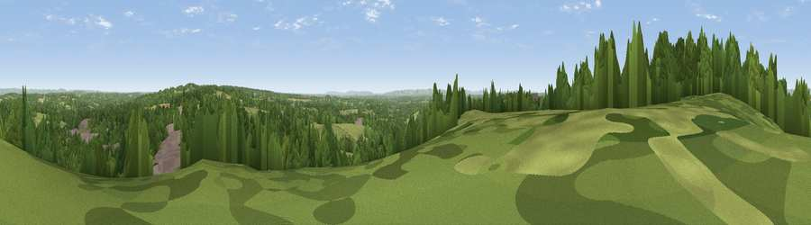

Viewpoint near Sharpthorne
#25437 in England · top 36% of its area beats it · near SharpthorneThe view, rendered

A 360° render of this exact spot computed from the terrain model, tree cover and land cover — summer colours, afternoon light, calibrated against photographs of famous viewpoints. Real trees, hedges and buildings will differ in detail.
The panorama
Grey silhouette: terrain skyline in each direction (720 bearings, Earth curvature and refraction included). Dashed green: skyline with trees (+15 m) and buildings (+8 m) as obstacles. Blue strip: how far the ground is visible on each bearing.
Where the view opens
Wedge length = distance to the farthest visible ground on that bearing (vegetation-aware). Rings at 10, 25 and 50 km.
What fills the view
50% woodland · 39% grassland · 7% built-up · 4% cropland
Angular shares of the visible panorama (visual magnitude), not map area. Landscape diversity 0.45 (0–1 Shannon).
Key numbers
More beautiful places nearby
The staircase of upgrades: each row has a higher view potential than everything closer. Driving times are estimates from straight-line distance, calibrated against real road routing — check an actual route before setting out.
| Place | Direction | Drive | Score |
|---|---|---|---|
| Viewpoint near Turners Hill | NNW · 4 km | ~9 min | 51.6 |
| Viewpoint near Forest Row | E · 7 km | ~15 min | 52.6 |
| Viewpoint near Upper Hartfield | E · 10 km | ~19 min | 59.6 |
| Viewpoint near Godstone | N · 18 km | ~31 min | 62.2 |
| Viewpoint near Westmeston | SSW · 20 km | ~33 min | 81.1 |
| Ditchling Beacon | SSW · 20 km | ~33 min | 81.8 |
| Fulking Hill | SSW · 25 km | ~40 min | 82.2 |
| Viewpoint near Firle | SSE · 28 km | ~44 min | 83.8 |
51.07485, -0.04829 · source: screening · position refined by local search. Computed location — check access rights before visiting.